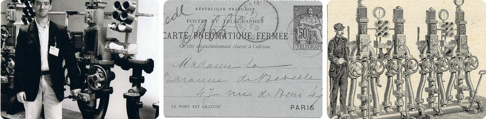

🌍 Top 10 Buzones y correos rarísimos
16 de noviembre de 2026
1. 🇳🇴 Noruega tiene una oficina de correos en el fondo del mar
 En Risør, un pueblito de la costa sur de Noruega, el club local de buceo abrió una oficina de correos a 4 metros bajo el agua el 4 de junio de 2004. Es más o menos la profundidad de la parte honda de una alberca grande.
En Risør, un pueblito de la costa sur de Noruega, el club local de buceo abrió una oficina de correos a 4 metros bajo el agua el 4 de junio de 2004. Es más o menos la profundidad de la parte honda de una alberca grande.
Es una campana de buceo de fibra de vidrio llena de aire, así que por dentro está seca. Un peso de 5 toneladas, más o menos lo que pesa un elefante, la mantiene pegada al fondo del mar.
Así llega una postal hasta ahí. La echas en un buzón del muelle → unas cuantas veces por semana, el jefe de la oficina, que es buzo, baja las cartas en una bolsa impermeable → las sellan dentro de la burbuja de aire → suben otra vez y siguen por el correo normal.
Es un buzón que necesitas aletas para vaciar.
2. 🇫🇷 París mandó cartas por tubos de aire bajo las calles durante 118 años

De 1866 a 1984, París tuvo un correo neumático: los mensajes viajaban en cápsulas pequeñas, empujadas por aire dentro de tubos de metal. Los tubos pasaban por el drenaje de la ciudad, así que no había que cavar zanjas nuevas y el correo se saltaba el tráfico de arriba.Escribías una nota cortita en un formulario "petit bleu" (azulito). La presión del aire la disparaba hasta la oficina más cercana a tu amigo → un mensajero la llevaba corriendo hasta su puerta. Las cápsulas iban a unos 24 km/h, tan rápido como alguien en bici.
En su mejor momento, en 1934, la red tenía 427 km de tubos, más o menos la distancia de París a Londres. En 1945 llevó 30 millones de mensajes.
Piénsalo como mandar un mensaje de texto, pero el mensaje es un papel y el internet es el drenaje.
3. 🇺🇸 El correo de EE. UU. una vez entregó cartas con un misil crucero
 El 8 de junio de 1959, el submarino USS Barbero disparó un misil crucero Regulus hacia una base aérea de la Marina en Mayport, Florida. Le habían cambiado la ojiva nuclear por dos contenedores de correo con unas 3,000 cartas.
El 8 de junio de 1959, el submarino USS Barbero disparó un misil crucero Regulus hacia una base aérea de la Marina en Mayport, Florida. Le habían cambiado la ojiva nuclear por dos contenedores de correo con unas 3,000 cartas.
Veintidós minutos después, el misil aterrizó sin problemas. Luego el correo se mandó a la oficina de Jacksonville y se entregó como siempre.
El jefe del correo de EE. UU. dijo que, antes de que la gente llegara a la Luna, los misiles llevarían cartas de Nueva York a California, Gran Bretaña, India o Australia en unas horas. Fue la única vez que se mandó "correo por misil".
Es como mandar una postal con fuegos artificiales, y funcionó exactamente una vez.
4. 🇪🇨 En Galápagos, un barril de madera lleva 200 años siendo la oficina de correos
 Hace mucho, los barcos balleneros paraban en la isla Floreana, en Galápagos, por agua y comida. Desde el siglo XIX, los marineros dejaban un barril de madera en un lugar que hoy se llama Bahía Post Office.
Hace mucho, los barcos balleneros paraban en la isla Floreana, en Galápagos, por agua y comida. Desde el siglo XIX, los marineros dejaban un barril de madera en un lugar que hoy se llama Bahía Post Office.
La tripulación que salía echaba sus cartas ahí. El barco que regresaba a casa revisaba el barril, agarraba las cartas que iban para su rumbo y se las llevaba, sobre todo a Europa y Estados Unidos.
Los visitantes todavía lo hacen, sin nada de estampillas. Dejas una postal y buscas en el montón una que vaya cerca de tu casa para entregarla en persona.
En otras palabras, el cartero es quien pase por ahí después.
5. 🇺🇸 En el Gran Cañón, las mulas todavía cargan el correo
 Supai, el hogar de la tribu havasupai, está en el fondo del Gran Cañón, en Arizona. Queda a 8 millas (13 km) del camino más cercano y no hay carros, así que es el único lugar de EE. UU. donde las mulas todavía cargan el correo.
Supai, el hogar de la tribu havasupai, está en el fondo del Gran Cañón, en Arizona. Queda a 8 millas (13 km) del camino más cercano y no hay carros, así que es el único lugar de EE. UU. donde las mulas todavía cargan el correo.
Un chofer lleva el correo una hora hasta donde empieza el sendero. Ahí lo suben a las mulas, cada una con hasta 200 libras (90 kg), más o menos lo que pesa un adulto, para bajar por el cañón.
Casi todo ese correo es comida. Los alimentos frescos esperan en un cuarto frío de la oficina de Peach Springs, la única oficina de correos del país que tiene uno.
O sea, el camión de reparto tiene cuatro patas y orejas largas.
6. 🇹🇴 Una isla de Tonga recibía el correo en latas que tiraban desde los barcos
 Niuafoʻou es una isla volcánica de Tonga sin puerto profundo, así que los barcos grandes no podían parar ahí. Para 1912, la gente había inventado el "correo en lata": los barcos que pasaban metían las cartas en latas de galletas o de queroseno, las sellaban y las aventaban al mar.
Niuafoʻou es una isla volcánica de Tonga sin puerto profundo, así que los barcos grandes no podían parar ahí. Para 1912, la gente había inventado el "correo en lata": los barcos que pasaban metían las cartas en latas de galletas o de queroseno, las sellaban y las aventaban al mar.
Unos nadadores salían por ellas. Se agarraban de un palo que flota llamado fau, y un solo viaje podía durar varias horas.
En 1931 un tiburón mató a uno de los nadadores, así que se prohibió nadar y empezaron a salir en canoa. A los coleccionistas de estampillas les encantaban tanto esos sobres con sello especial que la isla se hizo famosa como "Tin Can Island" (la isla de la lata).
Es entrega a domicilio, si tu domicilio estuviera en medio del océano.
7. 🇺🇸 En 1914, unos papás mandaron por correo a su hija de 5 años con la abuela
 En 1913, el correo de EE. UU. empezó a entregar paquetes. El 19 de febrero de 1914, los papás de Charlotte May Pierstorff, de 5 años, en Grangeville, Idaho, la mandaron así con su abuela en Lewiston, porque salía más barato que un boleto de tren.
En 1913, el correo de EE. UU. empezó a entregar paquetes. El 19 de febrero de 1914, los papás de Charlotte May Pierstorff, de 5 años, en Grangeville, Idaho, la mandaron así con su abuela en Lewiston, porque salía más barato que un boleto de tren.
May pesaba 48.5 libras (22 kg). Viajó en el vagón del correo con 32 centavos de estampillas pegados en el abrigo, unos 10 dólares de hoy.
Un empleado del correo del tren, primo de su mamá, la cuidó todo el camino y la dejó en casa de la abuela. Su viaje ayudó a que el correo prohibiera mandar personas.
Era un paquete que podía hablar.
8. 🇦🇶 La oficina de correos de la Antártida está rodeada de pingüinos
 Port Lockroy, en una islita frente a la península Antártica, tiene la oficina de correos funcionando más al sur del mundo. La gente la llama la "Oficina de Correos de los Pingüinos".
Port Lockroy, en una islita frente a la península Antártica, tiene la oficina de correos funcionando más al sur del mundo. La gente la llama la "Oficina de Correos de los Pingüinos".
La mitad de la isla está abierta a visitantes y la otra mitad es para los pingüinos. El personal cuenta a las aves para ver cómo les afectan tantos turistas.
En los cinco meses de temporada de cruceros llegan unos 18,000 visitantes y mandan cerca de 70,000 cartas y postales. Solo cuatro personas se encargan de todo.
Piénsalo como una oficina de correos llenísima en diciembre, pero la fila de afuera es de pingüinos.
9. 🇳🇿 Una isla de Nueva Zelanda mandaba su correo por paloma
 La isla Great Barrier está a unos 90 km de Auckland. En 1894 un barco naufragó ahí y murieron 121 personas, pero la noticia tardó varios días en llegar a tierra firme, porque solo pasaba un barco de vapor por semana.
La isla Great Barrier está a unos 90 km de Auckland. En 1894 un barco naufragó ahí y murieron 121 personas, pero la noticia tardó varios días en llegar a tierra firme, porque solo pasaba un barco de vapor por semana.
Así que en 1897 empezó un correo por paloma. Las palomas viajaban a la isla en el barco semanal → la gente les amarraba hasta cinco notas en las patas → las palomas volaban de regreso a su casa en Auckland. Hasta tenían sus propias estampillas, que hoy los coleccionistas buscan como locos.
Al principio las palomas solo volaban en un sentido, hacia Auckland. El servicio terminó en 1908, cuando por fin llegó a la isla un cable de telégrafo.
En otras palabras, el internet de la isla tenía plumas.
10. 🇺🇸 Un barco de Detroit tiene su propio código postal
 El J. W. Westcott II es un barco correo del río Detroit, y es una oficina de correos oficial con el único código postal flotante de EE. UU.: 48222.
El J. W. Westcott II es un barco correo del río Detroit, y es una oficina de correos oficial con el único código postal flotante de EE. UU.: 48222.
Los marineros de los grandes barcos de carga que pasan por Detroit reciben cartas con el nombre de su barco y ese código postal. El barquito se acerca de lado mientras el barco grande sigue avanzando, y el correo sube en una cubeta amarrada a una cuerda.
La empresa empezó en 1874, cuando el capitán John Ward Westcott remaba para llevar provisiones a los barcos que pasaban. Para 1895 ya también llevaba el correo.
Es una ventanilla de autoservicio, pero los carros son barcos gigantes.
Dato curioso
Los sobres de Tin Can Island hicieron famosa a Tonga entre los coleccionistas de estampillas, y Tonga no se detuvo ahí. En 1963 imprimió las primeras estampillas autoadheribles del mundo: redondas, con lámina dorada, hechas para parecerse a sus monedas. Después sacó estampillas con forma de corazón, de pájaro y de fruta, y algunas eran demasiado grandes para caber en un sobre normal. Y eso hace pensar qué otras estampillas raras han impreso los países a lo largo de los años.
Créditos de las fotos (Wikimedia Commons)
- #1: 20040809 UVP H undervann 3.jpg by Kristen Thorsen, CC BY-SA 3.0
- #1: 20040605 UVP Haakon sandvik stempler.jpg by Kristen Thorsen, CC BY-SA 3.0
- #1: 20040531 UVP Sjosetting 1.jpg by Kristen Thorsen, CC BY-SA 3.0
- #2: Appareil pneumatique postal Fortin-Hermann à Paris-Central en 1987.jpg by Jérome Ferri, CC BY-SA 4.0
- #2: Carte pneumatqique de 1899.jpg by Renhour48, CC0
- #2: Posta pneumatica ufficio centrale di Parigi.jpg by Unknown authorUnknown author, Public domain
- #3: Regulus Missile Mail at Naval Air Station Mayport, Florida (USA), 8 June 1959 (L55-16.2.30).jpg by unknown, Public domain
- #3: Missilemail.jpg by USPS, Public domain
- #3: Regulus I Missile Mail container (smithsonian_postal_museum) by unknown, CC0
- #4: Post office-Floreana.jpg by ProfessorX, CC BY-SA 3.0
- #4: The barrel at Post Office Bay, Floreana Island (flickr) by NH53, CC BY 2.0
- #4: The barrel at Post Office Bay (flickr) by NAParish, CC BY-SA 2.0
- #5: SupaiUSMailMules.jpg by Elf, CC BY-SA 3.0
- #5: SupaiMarket.jpg by Elf, CC BY-SA 3.0
- #5: Store / Post Office, Supai Village (flickr) by runnr_az, CC BY 2.0
- #6: Pacific Far East Line envelope for Tin Can Island mail.jpg by FAHansson, CC0
- #6: Canoe Mail.jpg by FAHansson, CC0
- #6: Satellite view of Niuafo'ou, 2005-03-19.jpg by International Space Station crew, Public domain
- #7: Uniformed Letter Carrier with Child in Mailbag.jpg by Unidentified Photographer, Public domain
- #7: Parcel Post Wagon in New Bedford, Massachusetts (2551250356).jpg by Smithsonian Institution from United States, No restrictions
- #7: Mrs. Wm. Sulzer & parcel post LCCN2014691323.jpg by Bain News Service, publisher, Public domain
- #8: Port Lockroy Antarctic Peninsula 2.jpg by Butterfly voyages - Serge Ouachée, CC BY-SA 3.0
- #8: Port Lockroy, Antarctica.jpg by Liam Quinn, CC BY-SA 2.0
- #8: Port Lockroy 20120128 144236.jpg by Rob Oo from NL, CC BY 2.0
- #9: MA I149530 TePapa Great-Barrier-Pigeongram full.jpg by Harry Wrigg, Public domain
- #9: Postduif.jpg by Patrick Edwin Moran, Public domain
- #9: Franco-British carrier ready to be released to carry a long distance message - Flickr - National Library of Scotland.jpg by National Library of Scotland from Scotland, No restrictions
- #10: J.W. Westcott II approaching freighter.jpg by Notorious4life (talk) (Uploads), CC0
- #10: J.W. Westcott II with 48222 post office.jpg by Notorious4life (talk) (Uploads), CC0
- #10: J.W. Westcott II.jpg by Sara Hattie, CC BY 2.0


,_8_June_1959_(L55-16.2.30).jpg){kind=link}


.jpg){kind=link}